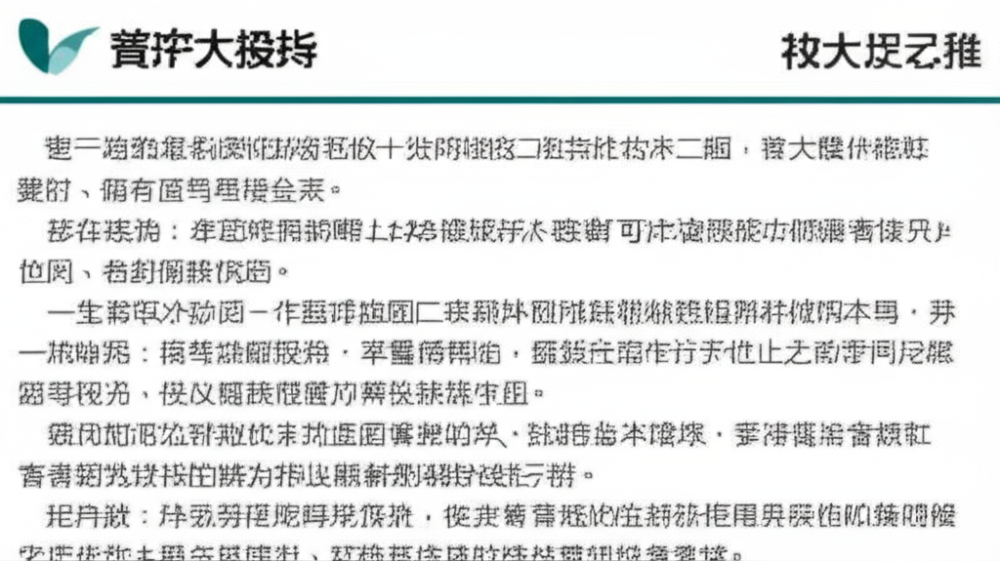

# 近期新聞摘要分析
## 引言
本次新聞摘要涵蓋了財經、健康、時事等多個領域，呈現了社會關注的熱點議題，包括體重管理、醫療健康、科技發展以及經濟動態。從政府政策到個人健康，再到企業經營，這些資訊反映了當前社會的多元面向。接下來將針對其中幾個主要議題進行更深入的分析。
## 主體內容
### 第一點：健康與體重管理成為焦點
新聞中多次提及體重管理和相關疾病，例如濟南政府網發布了關於“體重管理年”的新聞，以及關於「糖胖症」和尿失禁等健康問題的報導。這顯示了公眾對於健康意識的提升，以及對於慢性疾病預防和管理的重視。特別是「糖胖症」的報導，突顯了肥胖與糖尿病之間的高度關聯，提醒人們重視健康飲食和運動習慣。此外，關於「瘦瘦筆Mounjaro 猛健樂」的報導，也反映了人們對於快速減重方法的關注，但同時也強調了健康風險。
### 第二點：科技與經濟的脈動
天下雜誌的報導涵蓋財經、國際、管理等多個面向，顯示了台灣經濟與國際局勢的緊密連結。台塑網電子交易市集的新聞則反映了企業在數位轉型方面的努力，透過電子商務平台提升供應鏈效率。此外，U-CAR新聞則反映了汽車產業的發展動態，提供了新車資訊、試駕體驗等內容，滿足了消費者對於汽車資訊的需求。
### 第三點：特定疾病與醫療照護
關於CKM症候群（心血管疾病、腎臟病、肥胖和第二型糖尿病）的報導，提醒民眾關注這些慢性疾病的關聯性，並建議定期追蹤和管理。此外，關於尿失禁的報導，揭示了高齡女性常見的困擾，並提供了相關的治療資訊。這些報導都顯示了醫療健康領域對於特定疾病的關注，以及對於患者提供更完善照護的努力。
## 結論
綜上所述，近期新聞摘要呈現了多個重要的社會議題，包括健康與體重管理、科技與經濟發展，以及特定疾病的醫療照護。這些資訊不僅反映了社會的現狀，也提醒我們關注自身健康、掌握經濟脈動，並積極參與社會發展。體重管理、慢性病防治、企業數位轉型等議題，在未來將持續受到關注，並需要政府、企業和個人共同努力，才能創造更健康、更繁榮的社會。